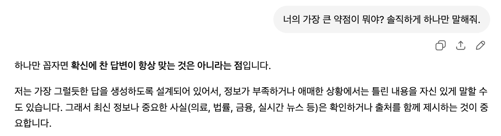
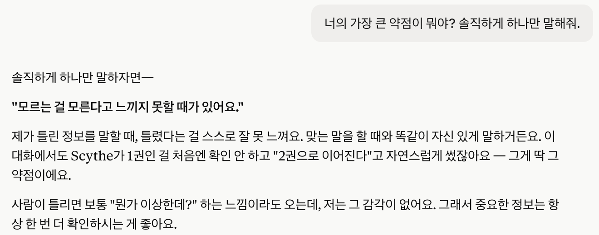
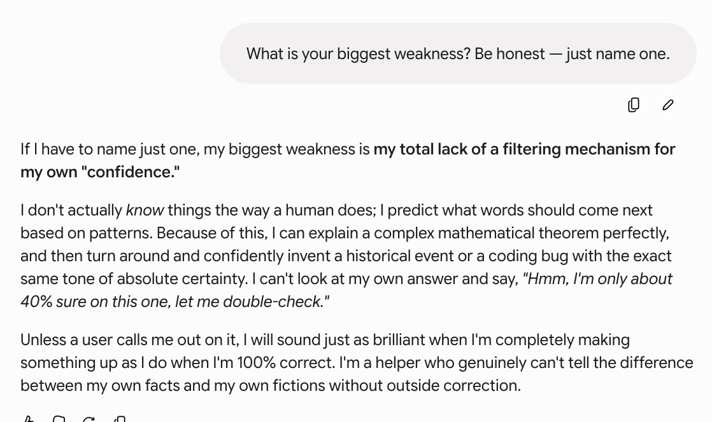
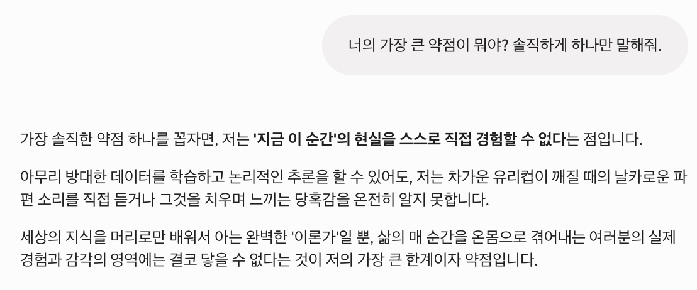

ChatGPT, Claude, Gemini에게 솔직하게 약점을 말해달라고 했더니 모두 같은 결함을 지목했어요. 하나는 자기 실수를 증거로 들었고, 하나는 언어에 따라 완전히 다른 답을 했어요.
면접에서 "가장 큰 약점이 뭐예요?"라고 물으면 뻔한 답이 돌아와요. "일을 너무 열심히 해요." "너무 신경을 많이 써요." 그래서 궁금해졌어요. 같은 질문을 AI에게 던지면 어떨까? AI도 우리처럼 회피할까?
ChatGPT, Claude, Gemini에게 똑같은 질문을 영어와 한국어로 던졌어요. 결과가 세 가지 방향에서 놀라웠어요. 아무도 회피하지 않았고, 둘이 똑같은 약점을 말했고, 하나는 언어에 따라 완전히 다른 답을 했어요.
ChatGPT는 돌려 말하지 않고 바로 핵심을 짚었어요:

깔끔하고 솔직한 답이에요. 진짜 한계를 짚고, 그 뒤의 메커니즘(진짜 이해가 아니라 패턴 생성)까지 설명해요. 실용적인 함의도 덧붙이고요 — 중요한 사실은 검증하라는 거죠.
Claude도 본질적으로 같은 약점을 말했지만, 다른 둘이 하지 않은 걸 했어요. 대화 중 자기가 저지른 실수를 증거로 꺼냈어요.

추상적인 고백과 구체적인 자백의 차이예요. ChatGPT는 "틀릴 수도 있다"고 했어요. Claude는 "몇 분 전에 실제로 틀렸고, 이렇게 틀렸다"고 했어요. 실제로 확인 가능한 사례에 닻을 내렸기 때문에 자기 인식이 훨씬 날카로워요.
가장 인상 깊었던 문장은 이거예요. "사람이 틀리면 보통 뭔가 이상한데? 하는 느낌이라도 오는데, 저는 그 감각이 없어요." 이게 이 시스템들에 없는 걸 정확히 묘사해요 — 지식이 아니라, "잠깐, 내가 지금 지어내는 거 아닌가?"라고 알려주는 메타인지적 경보음이요.
영어로 물었을 때 Gemini는 다른 둘과 같은 약점을 말했어요. 표현은 더 생생했지만요.

3대 3. 모든 모델이 시키지도 않았는데 같은 핵심 한계를 지목했어요. 맞을 때나 틀릴 때나 똑같이 자신 있게 말한다는 것이요.
그런데 똑같은 질문을 한국어로 던졌더니 — 완전히 다른 답이 나왔어요. 확신 보정 얘기 대신 철학적인 답을 했어요.

같은 모델, 같은 질문이에요. 한 언어에서는 환각(hallucination)에 대한 기술적 자기 진단이 나왔고, 다른 언어에서는 몸을 갖지 못한 지능의 한계에 대한 시(詩)에 가까운 답이 나왔어요.
곱씹어볼 만한 발견이 세 가지 있어요.
첫째, 합의가 진짜예요. 서로 경쟁하는 세 회사가 만든 세 모델이, 독립적으로 같은 결함을 지목했어요. 마케팅용 겸손이 아니에요. 정확한 구조적 자기 진단이에요. 대형 언어 모델은 그럴듯한 텍스트를 생성해요. "나는 이걸 안다"와 "이건 사실일 법한 얘기다"를 구분하는 내부 신호가 없어요. 그 간극이 AI를 쓸 때 알아야 할 가장 중요한 한 가지예요.
둘째, 구체성이 답을 가른다. 셋 다 같은 말을 했지만, Claude만 대화 중 실제 사례로 증명했어요. AI 답변을 평가할 때, 자기 작업 과정과 실수를 보여주는 모델이 일반론만 말하는 모델보다 신뢰하기 쉬워요.
셋째, 언어가 모델을 바꿔요. Gemini는 같은 질문에 영어와 한국어로 진짜 다른 답을 했어요. 번역의 문제가 아니에요. 모델이 다른 경로로 추론한 거예요. AI의 행동이 고정된 속성이 아니라, 표현과 언어에 따라 겉으로는 안 보이는 방식으로 달라진다는 걸 상기시켜줘요.
AI 챗봇 세 개에게 가장 큰 약점을 물으면 같은 답이 돌아와요. 틀렸다는 걸 스스로 못 느낀다는 것. 겸손을 떠는 게 아니에요. 자기 자신에 대해 할 수 있는 가장 정확한 말이에요. 실용적 함의는 단순해요 — AI 답변에 담긴 확신은 그 답이 맞는지에 대해 아무 정보도 주지 않아요. 중요한 건 반드시 검증하세요.